What needs you today
Sorted by urgency, then oldest first within each band. Every row is a piece of work with a name on it, an age, and a route to the screen that resolves it.
The age badge is the whole point. This list used to key items by the sentence describing them, and rolled-up rows carry their own count. A fourth founder going at risk created a brand-new key, so the age reset to "Today" at precisely the moment things got worse. Items are now keyed by what the work is, and a check-off clears the row only until tomorrow.
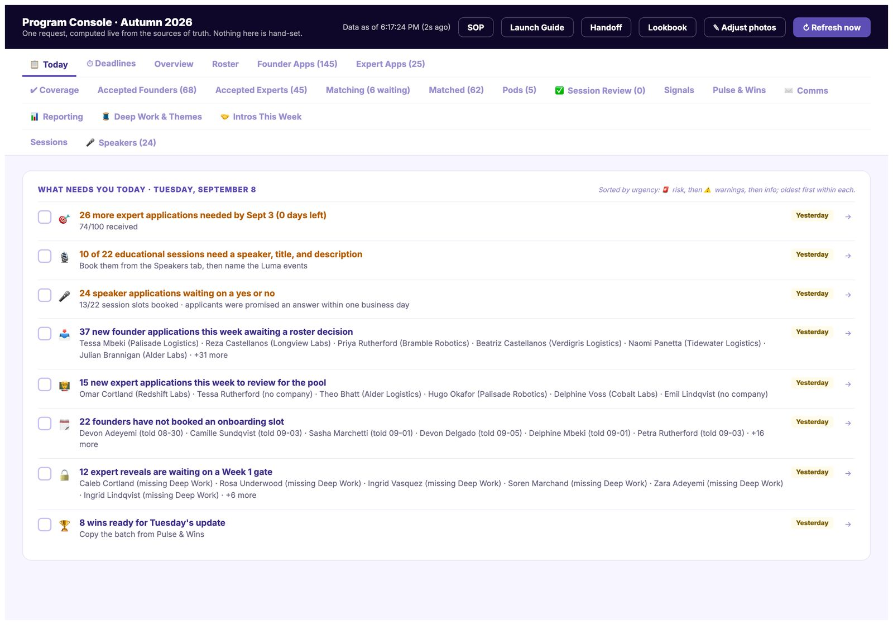
Where the whole cohort is
Status for every founder, the milestone funnel, and the aggregates that go into grant reporting. Computed on request rather than cached, so it cannot drift from the sheets underneath it.
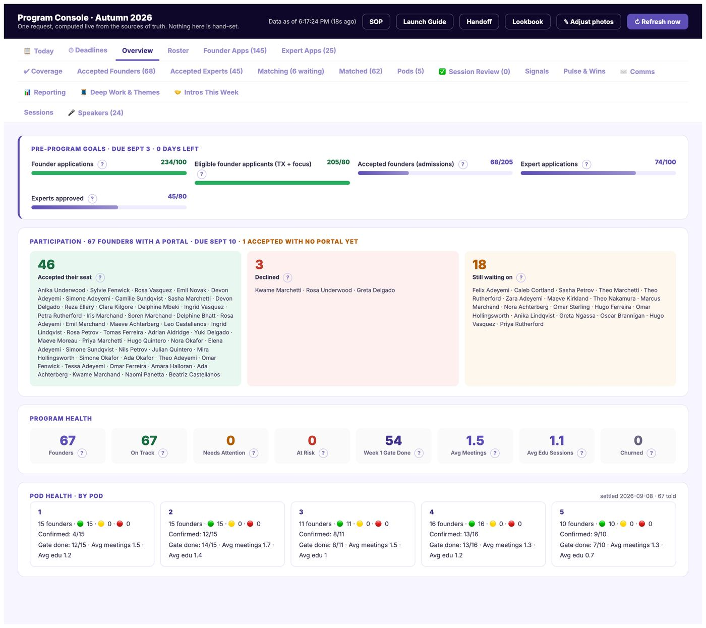
Every founder, one row each
Around seventy rows carrying milestone state, meeting counts, educational attendance, pulse history and status. This is the screen that replaced eleven spreadsheet tabs.
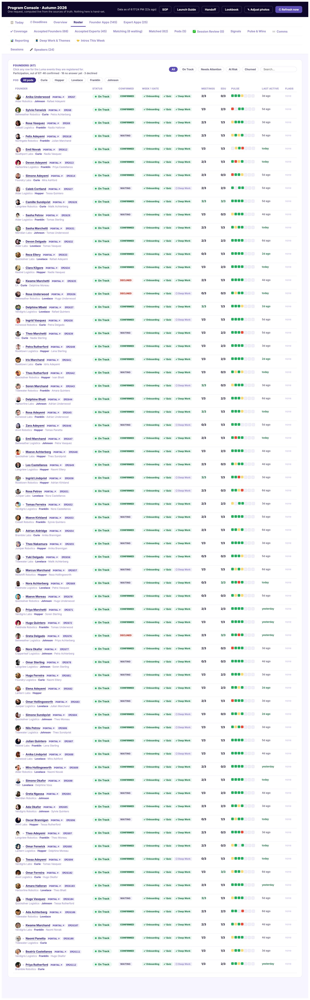
One founder, everything known about them
Application answers, milestone timeline, every session logged, every pulse rating, every email sent. Opened from any row without leaving the console.
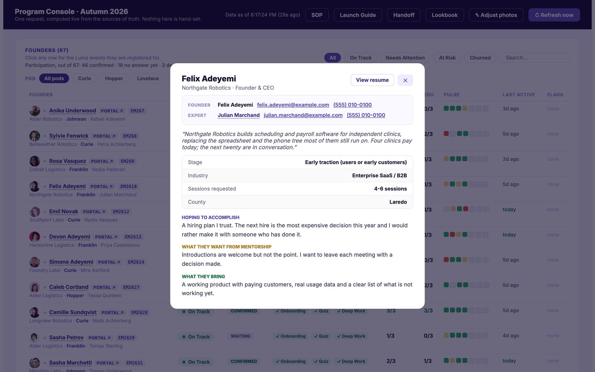
143 founder applications, reviewed in the console
Applications arrive from Typeform and land here with the full submission, the uploaded resume, and an accept or reject decision that writes straight back to the roster.
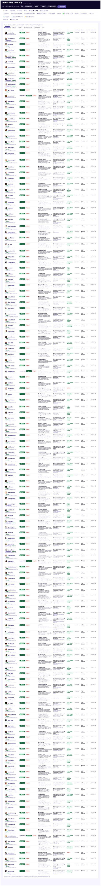
The decision screen
Everything needed for a yes or no on one screen, so a reviewer is not opening three tabs and a PDF to make a call on each of 143 applications.
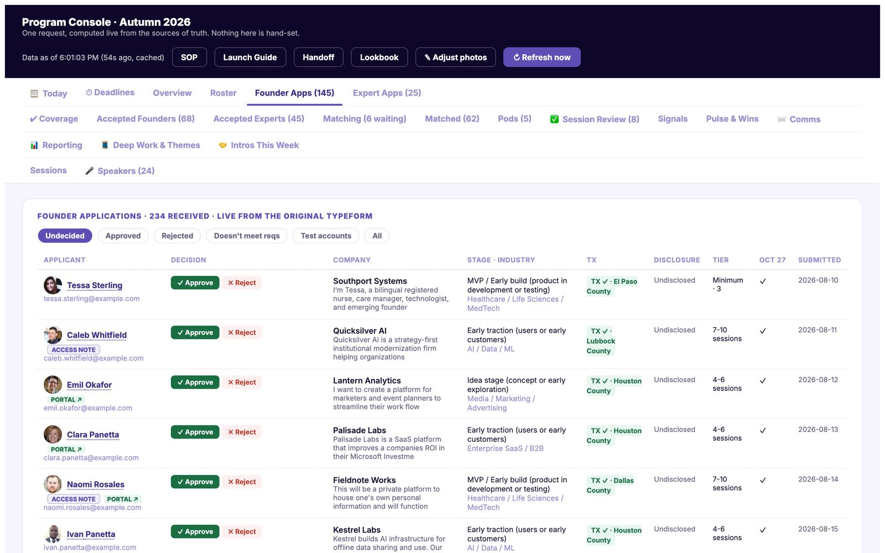
Checked before anyone is matched
Founders hand a stranger their business problems, so every mentor application is checked against the public record. Four verdicts: corroborated, partly corroborated, nothing found, contradicted.
The wording is the design. "Nothing found" is deliberately not "suspicious". Plenty of excellent operators have no web presence, and a tool that treats absence as guilt quietly filters for people who post a lot.
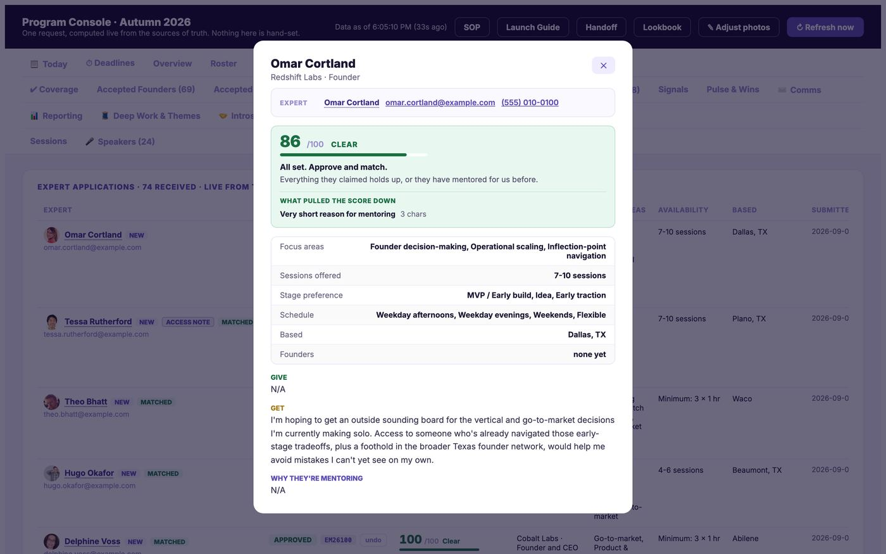
The whole waiting room at once
This is the piece of the system I am proudest of. Matching does not pick the best next pairing. It solves everyone still waiting as a single problem, then explains the trade it made in plain English.
The console states it directly on the screen: "This is the best set of pairings for all 7 at once, not the best next click. Going down the list newest-first instead would leave 4 weak and 2 excellent-or-better, against 2 weak and 1 excellent-or-better here. 2 founders come up a grade because 2 give up a mentor they would have grabbed first."
Why that matters: greedy first-come matching quietly rewards whoever applied earliest and leaves the last arrivals with whoever is left over. Solving the room as a whole costs more compute and produces a fairer cohort.
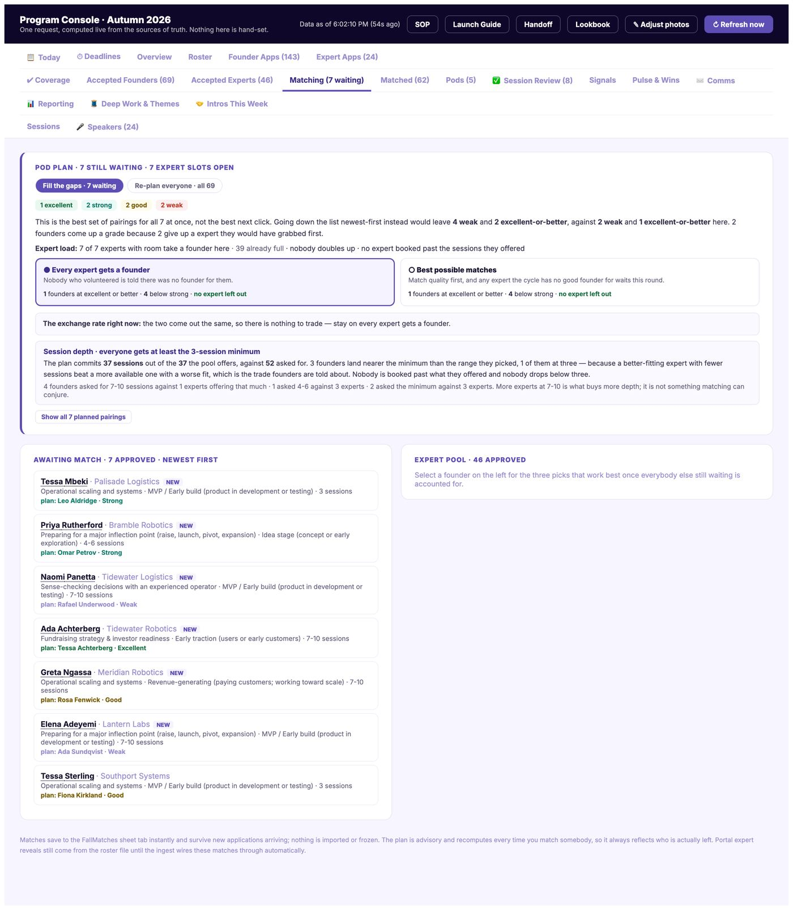
Two objectives, and the exchange rate between them
"Every mentor gets a founder" against "best possible matches". These pull in opposite directions, so the console prices the trade rather than hiding it: how many founders land at excellent or better, how many below strong, and whether any mentor who volunteered is left without anybody.
It also reports session depth honestly. The plan commits 37 sessions out of the 37 the pool offers, against 52 asked for, and says plainly that more mentors offering 7 to 10 sessions is what buys more depth. That is not something matching can conjure.
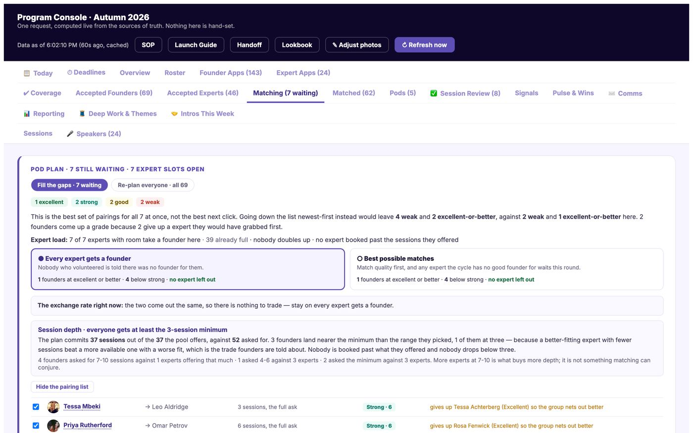
The human keeps the last word
Every suggestion can be overridden, and the override is recorded with a reason. An algorithm that cannot be argued with is one people route around.
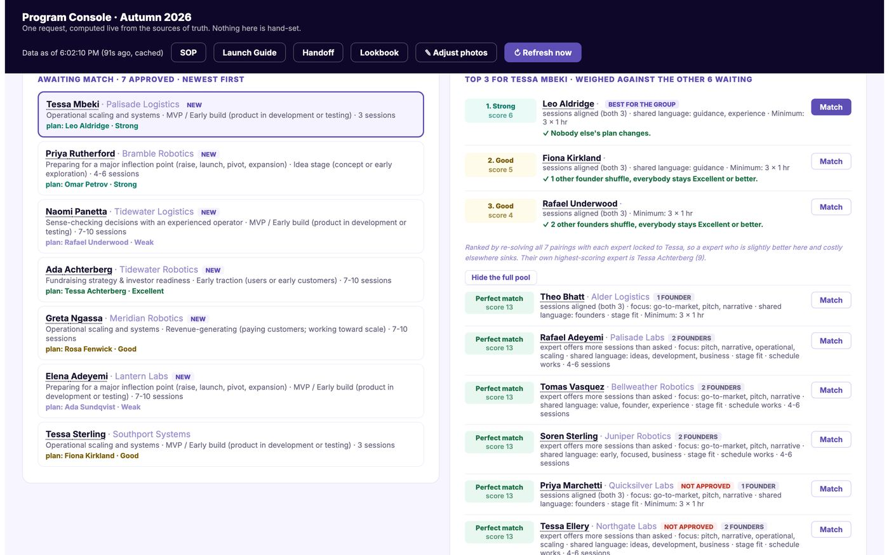
62 pairs, each with its reasoning attached
Every completed match keeps the explanation that produced it, which is what the founder and the mentor both get to read.
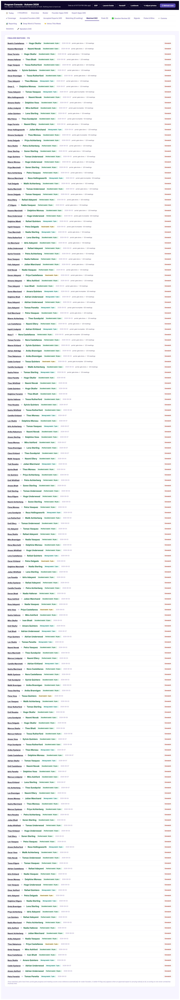
The match, explained
Industry, stage, focus area, availability and method, scored and shown. Published to participants rather than kept internal, because a founder who can read why they got their mentor arrives at the first meeting differently from one who was handed a name.
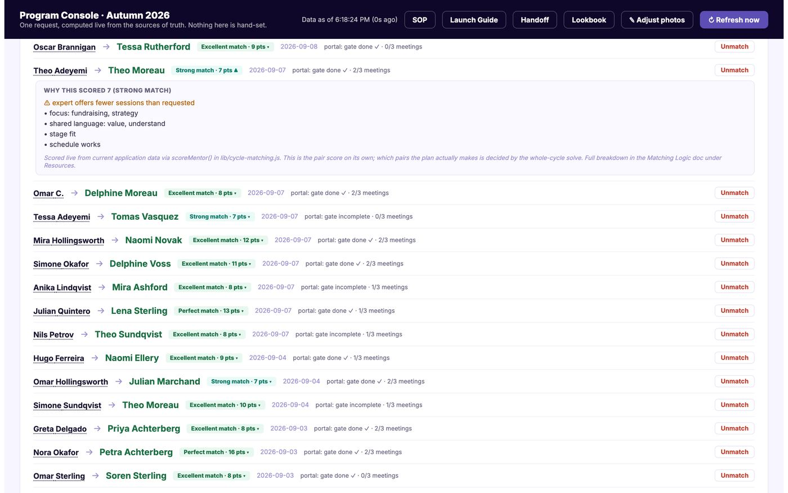
Five rooms, grouped on purpose
Founders are grouped by stage and focus rather than alphabetically, so a room has something to talk about.
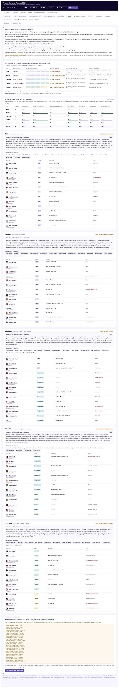
What the cohort is actually saying
Founders write into portal prompts every week. A Friday job clusters those answers, ranks the themes and posts them to Slack with session ideas. This is how the next set of educational sessions gets chosen, rather than by guessing.
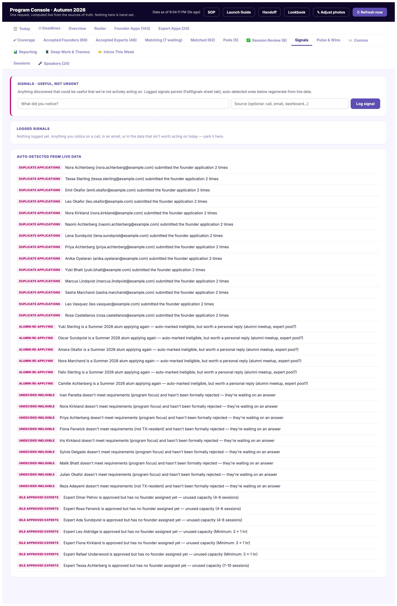
A weekly grid of how everyone is doing
One rating per founder per week: fine, a check-in would be nice, or not going to plan. The grid makes a two-week slide visible before it becomes a churn.
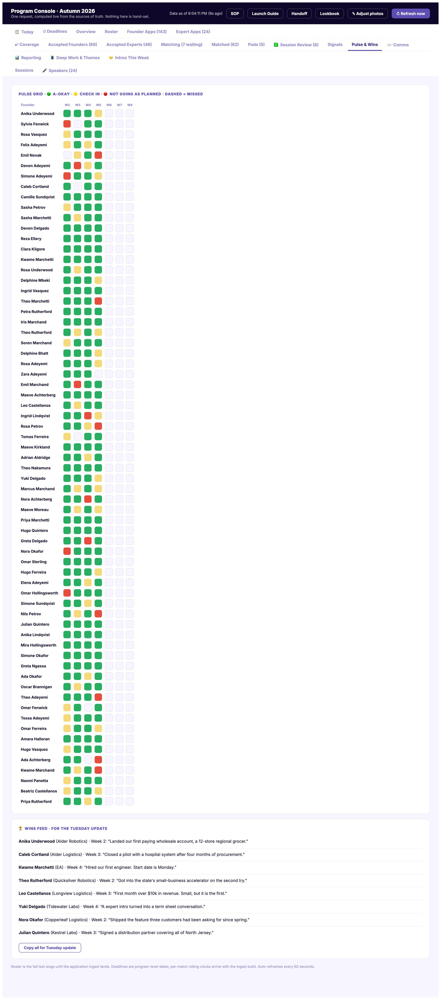
Two-sided confirmation
A mentor session only counts once both the founder and the mentor confirm it happened. That is what makes 8,000 minutes defensible to an auditor, and it costs a mentor about four seconds.
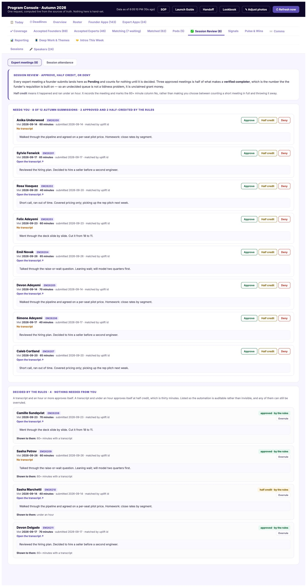
Grant exhibits, generated from live data
The programme is state-funded, and funding is released against evidence. Exhibits were previously rebuilt by hand each reporting period from spreadsheet exports, and every hand-rebuild is a chance for the report and the data to drift apart. Generating them from the same source the console reads makes drift structurally impossible.
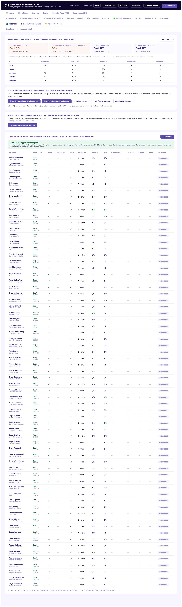
Booking 22 sessions without a spreadsheet in your lap
Speaker applications, session slots, confirmations, one-pagers and event pages, tracked as one pipeline. Applicants were promised an answer within one business day, so the queue shows how long each has been waiting.
The capture of this tab is withheld: it shows real speakers by name against their internal chase state. The speaker loop walkthrough rebuilds the same board with invented speakers, and follows the whole pipeline from the source file to the published event.
Connections the programme should be making
Surfaces founders who should meet each other based on what they have written, so the introductions happen rather than being noticed in week eight.
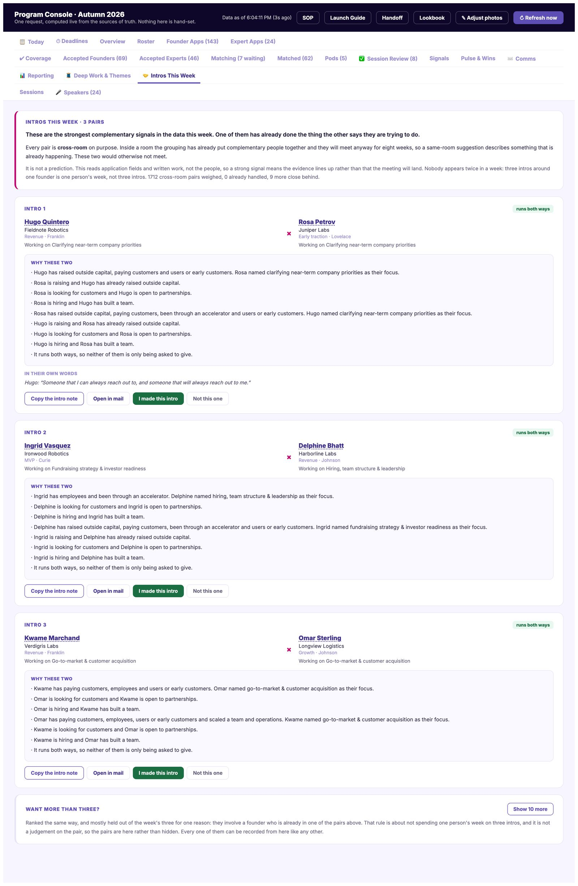
There are twenty-two tabs. This is nineteen frames from the ones that carry the most design decisions. The founder-facing side is a separate walkthrough.